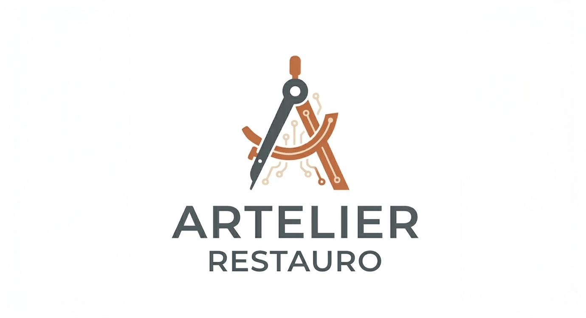

Cliente finale
Nessun canale affidabile
Chi ha un oggetto da restaurare — un mobile, un orologio, un libro — non sa a chi rivolgersi. Naviga tra passaparola, preventivi incomparabili e nessuna garanzia sul risultato.

Artelier trasforma un mercato frammentato in un'esperienza semplice, trasparente e protetta: dalla richiesta al pagamento finale, tutto dentro una sola piattaforma.
Un processo in sei passaggi. Nessuna chiamata a freddo, nessun preventivo opaco, nessuna sorpresa.
NLP classifica l'oggetto e attiva i restauratori più adatti.
Portfolio curato. Ogni professionista è selezionato prima dell'ingresso.
Pagamento rilasciato solo al completamento del lavoro.
Ogni lavoro è coperto. Recensioni solo da transazioni reali.
Trovare un restauratore qualificato oggi richiede passaparola, conoscenza locale e fiducia cieca. Artelier nasce per connettere chi possiede un oggetto di valore con il professionista giusto.
Chi ha un oggetto da restaurare — un mobile, un orologio, un libro — non sa a chi rivolgersi. Naviga tra passaparola, preventivi incomparabili e nessuna garanzia sul risultato.
Il restauratore giovane qualificato ha competenza ma non visibilità. Dipende da un passaparola locale che si costruisce in dieci o quindici anni — e rischia di abbandonare il mestiere prima di arrivarci.
Non esistono dati aggregati sui prezzi reali del restauro privato. L'asimmetria informativa protegge gli operatori opachi e penalizza i qualificati che valgono di più.
Il cuore di Artelier è un flusso semplice da capire ma sofisticato da orchestrare: foto dell'oggetto, intake AI, selezione del restauratore, preventivi comparabili, escrow e garanzia 6 mesi.
L’utente descrive il problema in linguaggio naturale, indica la tua città e carica 3–5 foto dell'oggetto. In 2 minuti, senza moduli lunghi.
L'AI identifica categoria, sotto-categoria e condizioni dell'oggetto. Ti mostra subito un range di prezzo trasparente prima di qualsiasi contatto.
2–4 restauratori qualificati rispondono entro 48–72 ore con preventivi strutturati e comparabili, selezionati per specializzazione, portfolio e storico.
Escrow integrato, milestone, chat tracciata e garanzia Artelier di 6 mesi sul lavoro completato. Il restauratore guadagna solo se il cliente è soddisfatto.
Artelier non usa l'AI come decorazione: la usa per costruire il primo dataset transazionale verticale del restauro privato italiano.
Il cliente descrive l'oggetto e carica le foto. Artelier traduce in categoria di restauro, condizioni, urgenza e tipologia di intervento.
Lo scoring pesa specializzazione, win-rate per categoria, qualità visiva del portfolio e capacità attuale del restauratore.
Un modello interno stima il range di prezzo prima del contatto, addestrato sullo storico transazioni per categoria e zona.
L’escrow riduce il rischio percepito, tutela il cliente e allinea il compenso all’effettivo completamento del lavoro.
Cliente e artigiano restano dentro un flusso gestito, utile per aggiornamenti, chiarimenti e supporto in caso di disputa.
Le recensioni arrivano solo da transazioni completate, per costruire reputazione concreta invece di segnali deboli e manipolabili.
Ogni lavoro completato viene selezionato, ottimizzato e pubblicato dal team Artelier. Il risultato è la vetrina professionale del restauratore — e un dataset visivo proprietario per il ranking AI.
La differenza non è di funzionalità, è di incentivi. Artelier guadagna solo se il restauro è completato e il cliente è soddisfatto — non sul contatto, non sul lead.
La rete Artelier non è aperta a tutti. Ogni restauratore viene valutato per portfolio, specializzazione e track record prima dell'ingresso.
Chi offre semplice lead generation viene pagato a prescindere dall'esito. Artelier guadagna solo se il lavoro è completato e il cliente è soddisfatto. È una differenza strutturale, non di marketing.
Garanzia 6 mesi su ogni lavoro completato. Recensioni solo da transazioni reali. Portfolio curato editorialmente. La fiducia non è una promessa: è strutturale.
Artelier è attivo su tutto il territorio nazionale. Ovunque tu sia, puoi trovare il restauratore giusto per il tuo oggetto.
Artelier copre l'intero spettro del restauro privato italiano. Quattro categorie distinte, ognuna con la propria logica di matching.
Mobili, arredi, tessili, tappeti, cornici e oggetti decorativi. La categoria di volume: alta frequenza, cliente comune o erede, bottega artigianale locale. La porta d'ingresso di Artelier per molti clienti — chi fa restaurare la credenza della nonna spesso torna per altri pezzi.
Ebanisteria d'arte, fabbri artistici, stuccatori, doratori, intarsiatori, vetrai artistici, ceramisti d'autore. Tra restauro puro e produzione autoriale: il professionista non solo ripara, ma crea e reinterpreta. Il verticale premium di Artelier.
Libri antichi, manoscritti, stampe, mappe, fotografie d'epoca, documenti di valore. Logistica postale assicurata: il restauratore giusto raggiunge il tuo oggetto ovunque in Italia, senza doversi spostare.
Orologeria meccanica, strumenti musicali d'epoca, fumetti, memorabilia, apparecchi tecnici vintage (fotocamere, radio, giradischi). Community attive, domanda digitale alta: la categoria con il maggior traffico organico naturale.
Nel restauro un errore è irreversibile — un mobile rovinato non torna indietro. Per questo ogni aspetto di Artelier è progettato per eliminare il rischio percepito.
Artelier seleziona restauratori per specializzazione, portfolio verificato e track record. Non per disponibilità o prezzo più basso.
Ogni lavoro completato viene selezionato, ottimizzato fotograficamente e pubblicato dal team. Non auto-pubblicazione: una rivista digitale del restauro italiano.
Garanzia Artelier di 6 mesi su ogni lavoro completato. Pagamento in escrow rilasciato solo al completamento. Il restauratore guadagna solo se il cliente accetta.
Lo Showcase Artelier non è auto-pubblicazione. Ogni lavoro viene curato editorialmente dal team prima della pubblicazione — diventa l'identità digitale del restauratore, citata sul biglietto da visita e condivisa con i propri clienti.

Credenza fine '800 con intagli deteriorati e finitura originale compromessa. Pulitura, consolidamento del legno, reintegrazione delle parti mancanti e rifinitura a cera naturale. Il prima/dopo è la prova più diretta della competenza del restauratore.

Cornice decorativa in legno intagliato con doratura a foglia oro zecchino. La tecnica richiede formazione pluriennale e un portfolio fortemente visivo: è esattamente il tipo di lavoro in cui lo Showcase Artelier fa la differenza tra trovare il professionista giusto e affidarsi al caso.

Raccolta di volumi del '700–'800 con legature danneggiate, carte fragili e macchie da umidità. Consolidamento, deacidificazione e rilegatura artigianale. L'unica categoria con logistica postale assicurata: il restauratore giusto raggiunge l'oggetto ovunque in Italia.

Movimento smontato, pulito con ultrasuoni, ingranaggi verificati, molle sostituite e cassa lucidata. Il collezionista di orologi sa riconoscere la competenza a colpo d'occhio: per questa categoria il portfolio visivo è il biglietto da visita più efficace.
Ogni co-founder ha ownership piena su un dominio specifico. Matteo guida prodotto, tecnologia e AI. Federico e Riccardo presidiano ciascuno due categorie di restauro — supply, onboarding, qualità e Showcase. Giacomo guida la customer experience, il tono di voce e il rapporto col cliente. Nessuna sovrapposizione: ogni area rafforza le altre.
Matteo Micelli è il profilo che dà ad Artelier una direzione rara da trovare in un founder early-stage: unisce pensiero strategico, sensibilità di mercato e capacità concreta di costruzione del prodotto.
La sua formazione combina una laurea triennale in Marketing all’Università Bicocca, con un’impostazione quantitativa, e una magistrale in Digital Marketing allo IULM di Milano, con un taglio più qualitativo e orientato alla comprensione profonda dei comportamenti e dei contesti.
A questa base accademica si aggiunge un’esperienza di otto anni come analista dati nella ricerca di mercato, maturata su volumi informativi complessi, letti attraverso una solida familiarità con big data, Python, SQL e sistemi AI.
Questa combinazione fa di Matteo non solo il CEO del progetto, ma il suo vero architetto di sistema: è la persona che può tradurre una visione ambiziosa in un’infrastruttura operativa, misurabile e scalabile.
In Artelier il suo valore va ben oltre il presidio tecnico. Matteo porta una competenza di marketing strategico fondamentale per il posizionamento della startup: sa leggere il mercato, individuare la finestra giusta di domanda, costruire un’offerta credibile e trasformare un bisogno ancora disperso in una categoria chiara e riconoscibile.
È questa capacità che consente ad Artelier di non presentarsi come un semplice marketplace, ma come una nuova infrastruttura di fiducia per il restauro privato italiano.
Sul piano esecutivo, Matteo presidia la costruzione dell’architettura di intake, matching, escrow e tracking, e soprattutto la trasformazione di ogni interazione in capitale informativo proprietario.
In un progetto come Artelier, dove il vero vantaggio competitivo si costruisce nella qualità del dato e nella precisione crescente del sistema, Matteo rappresenta il ponte tra intuizione imprenditoriale e vantaggio tecnologico difendibile.
Federico Mares porta in Artelier una competenza particolarmente preziosa perché si colloca nel punto d’incontro tra cultura, territori, domanda sofisticata e costruzione di relazioni.
Il suo percorso accademico unisce una laurea triennale in Cultura e Sviluppo dei Territori allo IULM di Milano e una magistrale in Sviluppo Interculturale dei Sistemi Turistici alla Ca’ Foscari di Venezia, con un’impostazione economico-gestionale che gli permette di leggere non solo i contesti culturali, ma anche la loro sostenibilità e traducibilità in modello di business.
Il suo background nel turismo culturale è particolarmente coerente con il DNA di Artelier.
Federico conosce il profilo di chi si muove per l’arte, frequenta mercati antiquari, attribuisce valore alla storia degli oggetti e cerca esperienze autentiche, non standardizzate: è esattamente il tipo di domanda più interessante per categorie come Carta e Memoria e Vintage & Collezionismo.
Questa sensibilità lo rende decisivo nella costruzione del lato supply e nella lettura del lato demand.
Federico è il co-founder che può entrare in contatto con laboratori specialistici, restauratori difficili da intercettare e community di collezionisti che spesso vivono fuori dai canali mainstream, traducendo mondi molto diversi in una rete coerente e attivabile sulla piattaforma.
Il suo valore, però, non è solo relazionale.
Federico ha la capacità di costruire fiducia in settori dove il linguaggio conta quanto la competenza, e dove per attivare una collaborazione servono credibilità, ascolto e continuità.
Per Artelier questo significa poter accedere a una supply di qualità che non risponde a logiche mass-market, ma a logiche di reputazione, specializzazione e appartenenza.
In chiave investitore, Federico è la figura che rende credibile la costruzione del network nazionale nel tempo.
Non si limita a reclutare restauratori: costruisce accesso, densità relazionale e profondità di mercato in segmenti dove il vantaggio competitivo nasce dalla qualità delle connessioni prima ancora che dal volume.
Giacomo Pellegrini è il co-founder che trasforma la struttura operativa di Artelier in un’esperienza percepita come affidabile, umana e premium.
La sua formazione in Lettere per la Comunicazione alla Ca’ Foscari di Venezia e in Scienze dello Spettacolo allo IULM di Milano gli ha dato una doppia competenza rara: capacità narrativa e capacità di gestione della relazione in contesti ad alta intensità emotiva.
Il suo percorso professionale nella gestione del rapporto con il pubblico e nella gestione delle crisi, in ambito teatrale e aziendale, è particolarmente rilevante per Artelier.
Il restauro non è un acquisto impulsivo né una transazione fredda: molto spesso coinvolge oggetti ereditati, pezzi fragili, aspettative alte, timori concreti e una forte componente affettiva.
In questo contesto, la qualità della comunicazione non è un accessorio di brand, ma una leva operativa decisiva.
Giacomo ha la capacità di governare questi momenti con tono, precisione e sensibilità.
Sa scrivere, ma soprattutto sa far sentire compreso il cliente; sa gestire una criticità senza irrigidirla; sa trasformare un punto di frizione in un momento di consolidamento della fiducia.
Per Artelier questo significa presidiare uno dei punti più delicati dell’intero modello: la fiducia percepita.
La piattaforma può avere il miglior matching, la miglior rete di restauratori e la miglior struttura di prodotto, ma è la qualità della relazione a determinare se il cliente si affida davvero, se completa la transazione e se torna.
Giacomo è quindi molto più di un responsabile della customer experience.
È la figura che dà coerenza emotiva al brand, definisce il tono di voce, gestisce i passaggi sensibili e contribuisce a fare di Artelier non solo un servizio efficiente, ma un servizio a cui il cliente attribuisce fiducia e valore.
Riccardo Asta porta in Artelier una combinazione di competenze estremamente distintiva perché unisce sguardo progettuale e capacità narrativa.
La sua formazione in Architettura all’Università di Genova, affiancata da un percorso parallelo nel giornalismo, lo colloca esattamente nel punto in cui il restauro diventa leggibile sia come qualità tecnica sia come racconto comprensibile al mercato.
L’architettura gli dà occhio, metodo e sensibilità per valutare la qualità costruttiva, la coerenza delle lavorazioni, la bontà di una finitura e la credibilità di un portfolio artigianale.
Il giornalismo gli dà invece la capacità di tradurre questa qualità in linguaggio: di raccontare bene un lavoro, di renderlo chiaro a un cliente non esperto e di far emergere il valore reale dell’artigiano senza semplificarlo.
In Artelier questa doppia competenza è strategica.
Riccardo non si limita a selezionare professionisti: contribuisce a definire lo standard con cui la piattaforma decide cosa è eccellenza, cosa è presentabile, cosa è coerente con il brand e cosa merita di diventare un caso forte nello Showcase.
Il suo ruolo è centrale soprattutto nelle categorie di maggiore volume e impatto reputazionale, perché è lì che si forma la percezione pubblica della qualità media della piattaforma.
Ogni restauratore valutato, ogni portfolio curato e ogni progetto raccontato secondo uno standard elevato contribuiscono a costruire la reputazione di Artelier come operatore serio, selettivo e credibile.
Per un investitore, Riccardo rappresenta una leva chiave di controllo qualitativo.
In marketplace ad alta fiducia, il problema non è solo crescere, ma crescere senza deteriorare la qualità percepita; Riccardo è una delle figure che rendono questa crescita disciplinata, perché presidia il punto in cui brand, selezione e presentazione della supply si incontrano.
Laureata in Beni Culturali a Padova e formatasi presso la Scuola di Restauro della stessa città, Silvia è il profilo-tipo del restauratore target di Artelier: giovane, qualificata, con portfolio reale e competenze tecniche avanzate maturate tra aziende specializzate e commesse private.
Supporta il progetto nella valutazione tecnica delle lavorazioni, nella definizione degli standard qualitativi e nella verifica della coerenza tra categorie e requisiti di affidabilità della supply.
Laureata in Pedagogia a Lecce e in Risorse Umane alla Bicocca di Milano, Arianna porta un background pluriennale nell'education e nelle HR, con expertise concreta in selezione, onboarding e retention di profili qualificati.
Per Artelier presidia gestione delle risorse umane, contrattualistica, amministrazione e organizzazione dei processi interni — garantendo esecuzione solida e compliant sin dal Giorno 1.
Il nome fonde l’eccellenza dell’artigianato con l’idea di atelier: uno spazio di cura, misura e maestria. È questo il punto di equilibrio del brand: tradizione italiana, servizio premium e tecnologia applicata con discrezione, dove serve davvero.